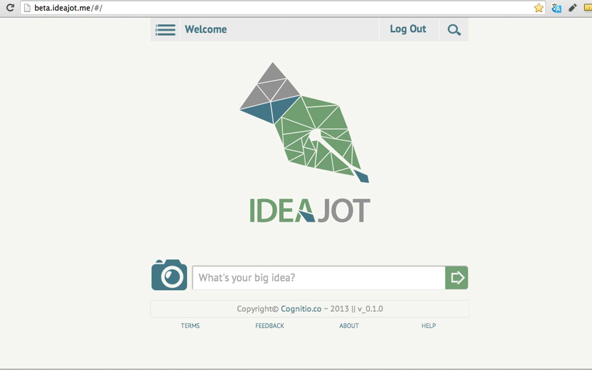
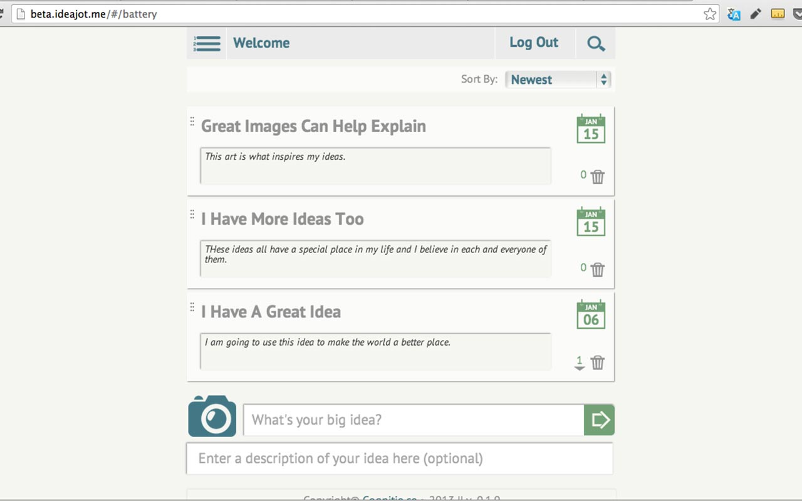

<div class="w-arrows">
    <div class="btn-prev"></div>
    <div class="close"></div>
    <div class="btn-next"></div>
</div>

<div class="img-project">
    <div class="nav-wrapper">
    	<div class="nav-work">
        	<div class="w-prev"></div>
    		<div class="w-next"></div>
        </div>
        <div class="wrapper-project">
            <ul>
                <li style="width:33.3%"><div class="video-container"><iframe src="//player.vimeo.com/video/81478035?title=0&amp;byline=0&amp;portrait=0" frameborder="0" webkitallowfullscreen mozallowfullscreen allowfullscreen></iframe></div> </li>
                <li></li>
                <li></li>
                
            </ul>
        </div>
        <div class="controller-3">
            <ul>
            </ul>
        </div>
	</div>
    <div class="clear"></div>
    <div class="info-project">
        <div class="tag-project">Branding / Development / Video</div>
        <div class="title-project">IDEAJOT</div>
        <div class="spacer"></div>
        <div class="description">Ideajot is a stand alone web application intended to change the world. This brash startup wants to make it easier for people to capture and develop their best ideas. We like that idea.<br><a href="beta.ideajot.com">http://beta.ideajot.com</a></div>
    </div>
</div>
<div class="clear"></div>
<div class="w-arrows last">
    <div class="btn-prev"></div>
    <div class="close"></div>
    <div class="btn-next"></div>
</div>